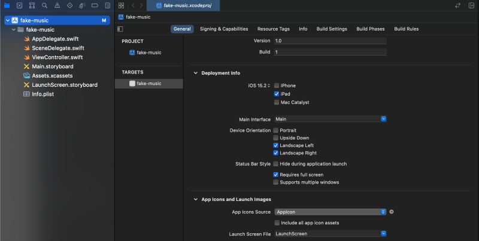
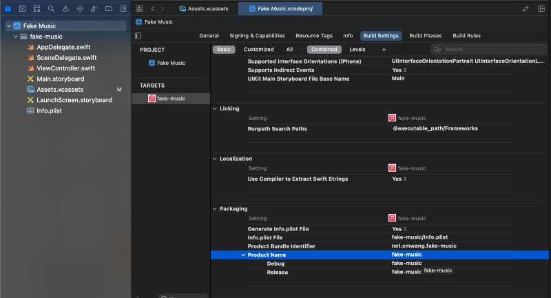
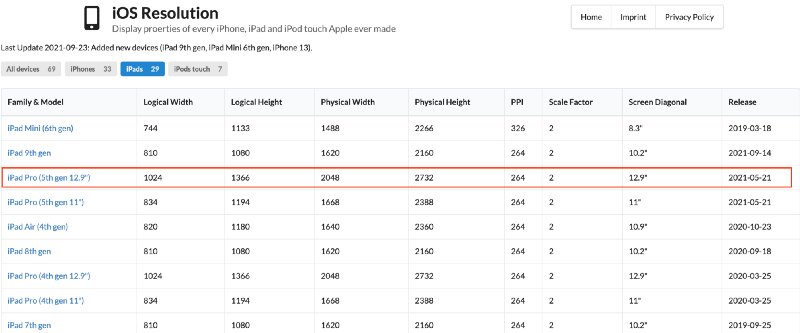
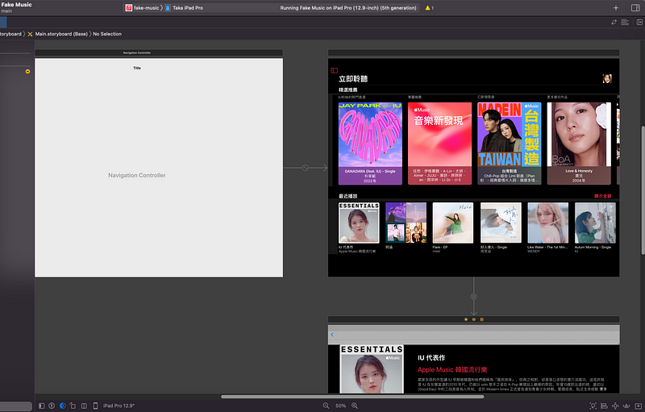
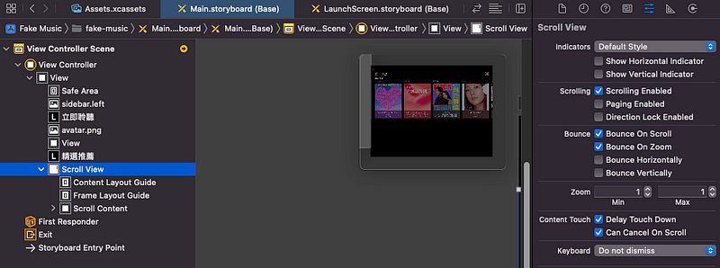

學習目標：
- 練習 Scroll View
- 練習 Navigation Controller
- 練習 Table View Controller & Static Cells
- 練習 Label & Button 樣式
- 練習 segue & SF Symbols
練習成果：

過程：
透過直接擷取 iPad Pro 12.9 實機畫面，在 story board 上仿製 Apple Music 上的 IU 專輯頁面，更進一步熟悉了 Navigation Controller 的使用，因為還不會製作符合各種機型的版面，所以就直接 hardcode 只支援 12.9 水平的版面，是有點呆版但也收穫不少。
 限定只支援 iPad 與 Landscape
 修改 Product Name 改變 APP 在桌面的名稱
需要注意的地方是，在 story board 上的是 point，但螢幕截圖是 pixel，因為沒有 zeplin 之類的設計稿，所以花最多時間還是在抓取與對齊座標，位置不是 pixel perfect，但練習的目的應該是達到了。
 Point 與 pixel 是 2x scale 的關係
最近播放的點選，參考下面文章，原本使用 tap gesture recognizer，不過大概因為我將 navigation controller 放錯地方，總是看不到 back 選單，最後選擇透明按鈕疊在上方的做法。
 Navigation Controller 需要從第一個畫面長出來，而不是第二頁
主畫面有兩個 scoll view，參考連結提供的技巧就可以方便製作，記得將水平與垂直的捲軸指示關閉，這樣畫面會比較擬真。
設定 content size，實現水平捲動，上下捲動和分頁的 scroll view
 取消勾選水平與垂直 indicator，使得 scroll view 捲動時不會顯示卷軸
Table View 的第一個 Cell 與最後兩個 Cell 為了版面調整，中間的歌曲列表只需要透過修改 row 數就可以複製，再修改封面照與 label 即可。